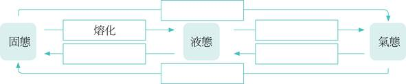
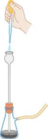
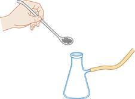
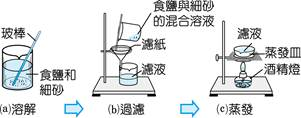

第 2 章 認識物質
2-1 認識物質（一）
物質的三態與變化
一、物質的三態與狀態變化
1. 物質通常以 固態、液態、氣態 三種狀態存在，當溫度改變至特定值時，狀態即發生改變（稱為三態變化）。
2. 三態之間的粒子排列比較：固態粒子排列 最緊密，氣態粒子間距 最大，液態介於兩者之間。
二、物質三態變化全圖解

圖 2-1 物質三態變化（放熱向下、吸熱向上）
| 變化名稱 | 方向 | 吸/放熱 | 典型生活實例 |
|---|
| 熔化 | 固態 → 液態 | 吸熱 | 冰塊融化成水 |
| 凝固 | 液態 → 固態 | 放熱 | 水結成冰 |
| 汽化 | 液態 → 氣態 | 吸熱 | 水燒開變成水蒸氣；蒸發 |
| 凝結 | 氣態 → 液態 | 放熱 | 水蒸氣遇冷凝成小水珠（露） |
| 昇華 | 固態 → 氣態 | 吸熱 | 乾冰直接消失、碘固體加熱 |
| 凝華 | 氣態 → 固態 | 放熱 | 水蒸氣遇極冷空氣直接結霜（霜） |
💡 口訣速記：「吸熱向上（固→液→氣）、放熱向下（氣→液→固）」。昇華（固→氣）＆ 凝華（氣→固）為跨態直接變化，分別吸熱與放熱。
2-1 認識物質（二）
物理/化學性質與變化、空氣組成
一、物理性質 vs. 化學性質
| 類別 | 定義 | 常見實例 |
|---|
| 物理性質 |
不需要透過 化學變化，可藉感官或儀器直接觀測的性質。 |
顏色、氣味、光澤、硬度、熔點、沸點、溶解度、導電性、密度 |
| 化學性質 |
必須透過 化學變化 才能觀測到的性質。 |
可燃性、助燃性、腐蝕性、酸鹼性、氧化還原性 |
二、物理變化 vs. 化學變化
| 類別 | 定義 | 常見實例 |
|---|
| 物理變化 |
物質的 組成與本質不變，沒有產生新物質。 |
水結冰、融冰、蒸發、物體切割 |
| 化學變化 |
物質的 組成與本質改變，產生新物質。 |
燃燒、鐵生鏽、食物腐爛、光合作用 |
三、空氣的組成與性質
空氣是一種 混合物，主要成分為氮氣（約 78%）和氧氣（約 21%）。
| 排名 | 含量 | 氣體 | 重要性質 |
|---|
| 1 |
78% |
氮氣（N2） |
無色無味，不可燃也不助燃，性質穩定（惰性） |
| 2 |
21% |
氧氣（O2） |
無色無味，性質活潑，具有 助燃性（本身不可燃） |
| 3 |
0.9% |
氬氣（Ar） |
惰性氣體，性質極 穩定，不容易與其他物質反應 |
| 其他 |
少量 |
二氧化碳（CO2）、水蒸氣等 |
CO2無色無臭無味，不可燃也不助燃，能使澄清石灰水變 混濁 |
2-1 認識物質（三）
氧氣製備、排水集氣法與純物質/混合物
一、氧氣的製備實驗
實驗原理：以過氧化氫（雙氧水，H2O2）為原料，加入二氧化錳（MnO2）作為催化劑，可在常溫下快速分解產生氧氣。
2H2O2 (雙氧水) —→ 2H2O + O2↑
收集方法：排水集氣法（氧氣難溶於水，適合用此法收集）。
驗滿方法：將帶有火星的木條靠近集氣瓶口，若木條復燃，表示瓶中充滿氧氣（助燃性）。

圖 2-2 雙氧水製備氧氣裝置

圖 2-3 排水集氣法收集氧氣
二、純物質 vs. 混合物
| 類別 | 定義 | 典型實例 |
|---|
| 純物質 |
由 單一物質 組成，具有 固定成分 與特定物性（熔沸點固定）。可再分為元素與化合物。 |
純水（H2O）、食鹽（NaCl）、氧氣（O2）、鐵（Fe）、二氧化碳（CO2） |
| 混合物 |
由 兩種以上純物質 混合而成，不具固定比例與性質，可用物理方法分離。 |
空氣、食鹽水、自來水、汽水、果汁、土壤 |
⚠️ 常見易混淆辨別：自來水（混合物，含礦物質等雜質）vs. 純水（純物質）｜空氣（混合物）vs. 氮氣（純物質）｜食鹽水（混合物）vs. 食鹽（純物質）
2-1 隨堂實戰評量
單元核心觀念評量題組 (Q1～Q7)
(A) 木材燃燒
(B) 食物腐敗
(C) 鐵釘生鏽
(D) 冰塊融化
(A) 鐵的熔點為 1538℃
(B) 鐵在潮濕空氣中會生鏽
(C) 金有光澤
(D) 銅的密度約為 8.9 g/cm3
(A) 鹽溶於水
(B) 水蒸發成水蒸氣
(C) 汽油燃燒成二氧化碳和水
(D) 玻璃破碎
(A) 氮氣（78%）
(B) 氧氣（21%）
(C) 氬氣（0.9%）
(D) 二氧化碳（0.03%）
(A) 純水（H2O）
(B) 食鹽（NaCl）
(C) 食鹽水
(D) 二氧化碳
(A) 密度大於空氣的氣體
(B) 不易溶於水的氣體
(C) 有色且有臭味的氣體
(D) 質量輕、密度小的氣體
(A) 自來水、空氣
(B) 二氧化碳、碳酸鈣、鐵
(C) 自來水、食鹽水、二氧化碳
(D) 食鹽水、二氧化碳、碳酸鈣、空氣、鐵
2-2 溶液與濃度（一）
溶液組成、三種濃度計算公式
一、溶液的組成
| 名稱 | 定義 | 實例（糖水） |
|---|
| 水溶液 |
以水為溶劑，物質均勻溶解於水中所形成的溶液。 |
溶液外觀均勻透明，但不一定無色 |
| 溶質 |
被 溶解 在溶劑中的物質（通常量較少）。 |
糖（固體溶質） |
| 溶劑 |
用來 溶解 溶質的物質（通常量較多）。 |
水（液體溶劑） |
二、三種濃度計算公式
| 濃度種類 | 定義 | 計算公式 |
|---|
| 重量百分率濃度 (%) |
每 100 公克溶液 中所含溶質的公克數。 |
|
| 體積百分率濃度 (%) |
每 100 mL 溶液 中所含溶質的毫升數。 |
|
| 百萬分點濃度 (ppm) |
一百萬單位溶液中含有多少單位的溶質。常用於極低濃度。 |
|
💡 計算重點提醒：
• 重量百分率：分母是 溶液（溶質＋溶劑）的總質量，而非只有溶劑！
• 例：20 g 食鹽 ＋ 80 g 水 → 溶液總質量 = 100 g → 重量百分率 = 20/100 × 100% = 20%
• ppm 換算：10 ppm 表示每 1,000,000 mL（1 m³）中含 10 mL（10 cm³）溶質。
2-2 溶液與濃度（二）
溶解度、飽和與未飽和溶液
一、溶解度的定義
溶解度：在 定溫 下，每 100 公克溶劑 中，溶質能溶解的 最大量（單位：g/100g 水）。
例：20℃ 時食鹽的溶解度為 36 g/100g 水，表示 20℃ 時 100g 水最多可溶解 36 g 食鹽。
二、影響溶解度的因素：溫度
| 溶質種類 | 溫度升高時的溶解度 | 常見實例 |
|---|
| 大部分固體溶質 |
溶解度 增大 |
食鹽、蔗糖、硝酸鉀 |
| 少部分固體溶質 |
溶解度 減小 |
碳酸鈣、氫氧化鈣 |
| 氣體溶質 |
溶解度 減小（溫度升高氣體跑出） |
CO2（汽水打嗝原理）、O2 |
三、飽和溶液 vs. 未飽和溶液
| 名稱 | 定義 | 與溶解度的關係 |
|---|
| 飽和溶液 |
在定溫定量溶劑下，溶質已溶解至 最大量，無法再溶解更多溶質。 |
溶質量 = 溶解度 |
| 未飽和溶液 |
在定溫定量溶劑下，溶質尚 未達最大量，還可再溶解更多溶質。 |
溶質量 < 溶解度 |
💡 溶解度曲線應用：
• 降低溫度或蒸發溶劑，可使未飽和溶液變成飽和溶液，甚至使溶質析出形成 結晶。
• 升高溫度（多數固體），可使飽和溶液變回未飽和溶液（溶解度增大）。
• 氣體溶質（如汽水中的 CO2）：升溫 → 溶解度 減小 → 氣體逸出 → 打嗝。
2-2 隨堂實戰評量
單元核心觀念評量題組 (Q1～Q6)
(A) 16.7%
(B) 18%
(C) 16.7%（20÷120×100%）
(D) 20%
(A) 取 8 公克食鹽溶於 100 公克水中
(B) 取 8 公克食鹽溶於 108 公克水中
(C) 取 4 公克食鹽溶於 100 公克、濃度 4% 的食鹽水中
(D) 取 100 公克水，加入 100 公克、濃度 16% 的食鹽水中
(A) 溫度升高，氣體溶解度變大
(B) 溫度降低，氣體溶解度減小
(C) 溫度升高，氣體溶解度減小
(D) 壓力減小，氣體溶解度減小
(A) 10 m3
(B) 100 cm3
(C) 10 cm3
(D) 100 m3
(A) 水溶液一定透明無色，若有顏色則表示混有其他溶劑
(B) 固體才能溶於水，液體和氣體則不能
(C) 飽和的蔗糖水溶液，溫度愈低喝起來愈甜
(D) 水是很好的溶劑，但仍有不少物質難溶於水
(A) 一直攪拌，就可以溶解全部的糖
(B) 此溶液會有部分的糖沉澱（50g 水最多溶 100g 糖，120g 糖有 20g 析出）
(C) 此溶液為未飽和溶液
(D) 糖溶於水的過程稱為熔化
2-3 混合物的分離（一）
三種分離方法與食鹽細砂分離實驗
一、三種常見的混合物分離方法
| 分離方法 | 分離原理 | 應用實例 |
|---|
| 過濾法 |
利用物質的 顆粒大小 不同，以濾紙分離固液混合物。 |
食鹽與細砂的分離（先溶鹽，過濾出砂）、淨水廠淨化水 |
| 結晶法 |
利用 減少溶劑 或 改變溫度，使溶質由飽和溶液析出形成結晶。 |
海水曬鹽（蒸發結晶）、製備冰糖（降溫結晶） |
| 濾紙色層分析法 |
利用物質在溶劑中對濾紙的 吸附能力 不同，使混合物分離。 |
分析黑色墨水中的色素成分、植物葉片中的色素分析 |
二、食鹽與細砂分離實驗（四步驟流程）

圖 2-4 過濾分離細砂
【實驗步驟順序】（一定要照順序！）
① 溶解：加水溶化食鹽，細砂不溶。
② 過濾：利用顆粒大小差異，過濾出細砂（殘留在濾紙上）。
③ 蒸發：加熱食鹽水，使水蒸發。
④ 結晶：溶劑減少，食鹽析出成結晶。
💡 分離方法判斷口訣：
• 固液混合、顆粒大小不同 → 過濾法
• 想要取出溶質結晶 → 結晶法（蒸發或降溫）
• 同相混合物依吸附力分離 → 色層分析法
• 物理方法可分離 → 該混合物屬於 混合物（純物質無法用物理方法分離成不同成分）
2-3 隨堂實戰評量
單元核心觀念評量題組 (Q1～Q2)
(A) 過濾 → 溶解 → 蒸發 → 結晶
(B) 過濾 → 蒸發 → 溶解 → 結晶
(C) 溶解 → 過濾 → 蒸發 → 結晶（正確順序：先溶解使食鹽進入水中，再過濾去除細砂，最後蒸發結晶取得食鹽）
(D) 溶解 → 過濾 → 結晶 → 蒸發
(A) 溶解
(B) 結晶
(C) 過濾
(D) 蒸發
補充題：濃度計算綜合練習
(A) 10%
(B) 11.1%
(A) 30÷(30+270)×100%＝30÷300×100%＝10%
(A) 7.5 mL
(B) 25 mL
(C) 75 mL（體積百分率 75% 表示每 100 mL 溶液含 75 mL 溶質）
(A) 0.5 mL
(B) 5 mL
(C) 50 mL（50 ppm 即每百萬分之 50，也就是每 1,000,000 mL 含 50 mL）
第 2 章 認識物質 全章知識體系心智圖
全章知識地圖導覽
三大主題核心架構梳理
📌 2-1 認識物質
- 三態變化：固↔液↔氣（熔化/凝固/汽化/凝結/昇華/凝華）；吸熱向上、放熱向下。
- 物理變化：本質不變，無新物質；化學變化：本質改變，有新物質。
- 物理性質：不需化學變化可觀測（熔點、密度）；化學性質：需化學變化才能觀測（可燃性）。
- 空氣組成：N2(78%) > O2(21%) > Ar(0.9%)
- 純物質：固定成分、固定熔沸點；混合物：無固定比例，可物理分離。
📌 2-2 溶液與濃度
- 溶液：溶質＋溶劑；以水為溶劑稱水溶液。
- 重量% = 溶質(g)÷溶液(g)×100%
- 體積% = 溶質(mL)÷溶液(mL)×100%
- ppm = 溶質÷溶液 ÷ 1,000,000
- 溶解度：定溫下 100g 溶劑可溶最大溶質量。固體多數↑溫溶解度↑；氣體↑溫溶解度↓。
- 飽和溶液：已達最大溶解量；未飽和：尚未達最大量。
📌 2-3 混合物的分離
過濾法
原理：顆粒大小
應用：食鹽水過濾細砂
結晶法
原理：減少溶劑/改變溫度
應用：蒸發結晶取食鹽、降溫結晶製冰糖
色層分析法
原理：吸附能力不同
應用：分析墨水色素成分
食鹽＆細砂分離四步驟：溶解 → 過濾 → 蒸發 → 結晶
第 2 章 考前盤點與自我檢核
全章常考盲點對照與自我檢核
重點梳理 ＆ 課後通關檢核
| 小節主題 | 核心概念精華與常考盲點對照 |
|---|
| 2-1 物質三態 |
• 昇華 vs. 凝華：昇華（固→氣，吸熱）；凝華（氣→固，放熱）。結霜是凝華，不是凝固！
• 物理 vs. 化學：有無新物質產生是關鍵。水沸騰是物理變化；鐵燃燒是化學變化。
• 空氣主成分：氮氣 78%（最多）＞ 氧氣 21%；氧氣助燃但本身不可燃。
|
| 2-2 溶液濃度 |
• 重量%分母：是「溶液」質量（＝溶質＋溶劑），不是溶劑單獨的質量！
• 打嗝原理：溫度升高 → CO2（氣體）溶解度 下降 → 氣體逸出 → 打嗝。
• 飽和溶液加熱：溫度升高多數固體溶解度增大 → 飽和變未飽和（溶質全溶）。
|
| 2-3 混合物分離 |
• 食鹽細砂步驟順序：溶解→過濾→蒸發→結晶（不可先過濾，因食鹽顆粒也大於濾紙孔隙！）
• 過濾：分離顆粒大小不同的固液混合物；結晶：使溶質析出。
• 色層分析：吸附力弱的色素移動距離較長（跑得快）。
|
二、課後 6 大能力通關檢核清單
☑ 1. 我能完整說出物質六種三態變化的名稱，並區分吸熱/放熱。
☑ 2. 我能舉例說明物理性質/化學性質、物理變化/化學變化的差別。
☑ 3. 我能熟練計算重量百分率濃度（特別記住分母是溶液而非溶劑）。
☑ 4. 我能解釋打嗝原理，以及固體/氣體溶質溶解度與溫度的關係。
☑ 5. 我能說出食鹽與細砂分離實驗的四步驟順序及每步驟的分離原理。
☑ 6. 我能判斷某物質屬於純物質還是混合物，並選出合適的分離方法。
第 2 章 濃度計算專頁
課堂實作練習（大屏點擊顯解答）
一、重量百分率濃度計算（計算框，可直接書寫）
解：Cw = 15g ÷ (15+85)g × 100% = 15÷100 × 100% = 15%
解：食鹽 = 200g × 16% = 32g；水 = 200 - 32 = 168g
二、ppm 濃度計算
解：10 ppm = 10÷1,000,000；1,000 mL × (10÷1,000,000) = 0.01 mL 砷
三、溶解度判斷（飽和/未飽和）
解：溶解度 45g ＜ 加入 50g → 飽和溶液，析出 50 - 45 = 5g 硝酸鉀結晶